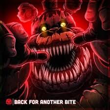

I put in a lotta time here
So I recorded a warnin' for ya
got to night five here
But I got more to the story, lore dump
Careful, the killer's in the buildin' now
Did you get all the unattended children out?
We play hard on the graveyard
But once you're in, no gettin' out
Oh, so you workin' security?
Intruder alerts are surely a certainty
Including the curse of work insecurity
When your imposter syndrome ends up turning you purpley
Pull up your monitors, toggle between
Even if somethin' on 'em is jumpin' off of the screen
The party's poppin' off, everybody's startin' to scream
If you keep up with the monsters, you can follow your dreams
So you picked up the job, now don't drop your guard
'Cause the pizza's not hot, but the demons are
Started from the ball-pit, no apologies
If I get nostalgic for all things (Woo!), Chuck E. Cheese
The first animatronic to serenade me with song
And ever since, it's like I never stopped singin' along
Stuck in a circular circus, it's an eternal loop now
Every remnant of any family fun was scooped out
Now my gears have gone dull 'cause I'm hard on my grind
Started with the night-shift, now I'm pullin' fulltime
I got Freddy in my veins, it ain't Mercury
We lost all the magic behind the curtain, see?
I am inactive when I'm under the lights
(Lights)
Because the magic only happens at night
(Tonight)
'm sick of singin' songs I wouldn't write
think I thought that this job would not actually bite
'Cause I was—
Bad night, but that was last night
the next night, na-na-na-na-na
Another bad night, but you'll come back, right?
Until the last night, na-na-na-na-na-na
Late nights are fine by me
the daylight, I hide my teeth
When I play nice, you might not see this comin'
'Cause I'll be back for another bite
What do you need a clock for?
(What do you need a lock for?)
outta time, who wants more?
(The audience!)
Knockin' upon your door, what do they hunger for?
Give 'em the essence of creation
(At its core)
Hi, kids, if you like violence
Look into my eyes, soon, you'll see from inside them
(Yay!)
You should never judge any Endoskeleton by his cover
When all his wires are tangled, just work on findin' the gutters
Because when I come to life, you'd be wise to hide
Keep an eye on the time and a light by your side
You can try, if you'd like, to survive every night
Take my hand, don't be shy, need a friend, phone a guy
(Yeah, uh, ha)
Minimum wage ain't great, but ya never knew
(Where you'll go)
'Cause you can take a day-job like a steppin' stone
Would you prefer a Springtrap to a pigeonhole
Now you're a one-trick pony, but you're not alone
No wonder why you keep comin' back
(Comin' back)
Playin' out the tape just so you could run it back
(Run it back)
Over and over again until there was nothin' left
(Nothin' left)
Tryin' to find the answers you're never gonna get
(Because I was—)
Another bad night, but that was last night
Onto the next night, na-na-na-na-na
Another bad night, but you'll come back, right?
Until the last night, na-na-na-na-na-na
Late nights are fine by me
In the daylight, I hide my teeth
When I play nice, you might not see this comin'
'Cause I'll be back for another bite
I've punched my card, nine-to-five can be real slow
Lights off, doors locked, now you're getting a real show
would wanna work a day-job? Not me
You ain't gettin' off the graveyard scot-free
Job description didn't say I would make it
Nor did I fit the position, but I decided to take it
So fake it—
Bad night, but that was last night
Onto the next night, na-na-na-na-na
Another bad night, but you'll come back, right?
Until the last night, na-na-na-na-na-na
Nights are fine by me
the daylight, I hide my teeth
I play nice, you might not see this comin'
'Cause I'll be back for another bite
You wanna wear my skin?
Go on and step right in
You wanna wear my skin?
Go on and step right i—
(On, and on, and on, and on, away)
(I mean, on, and on, and on, and on, away)
(I mean, on, and on, and on, and on, away)
(I mea—)
Who is comin' back for another bite?